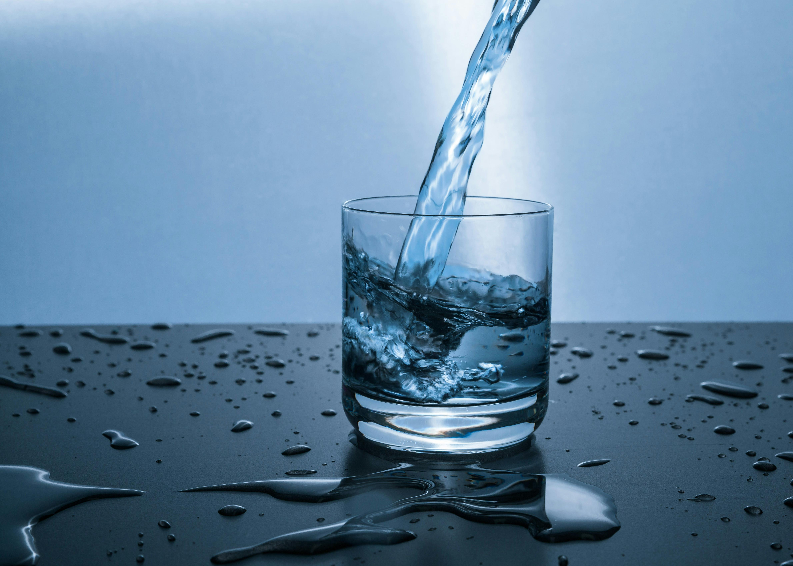
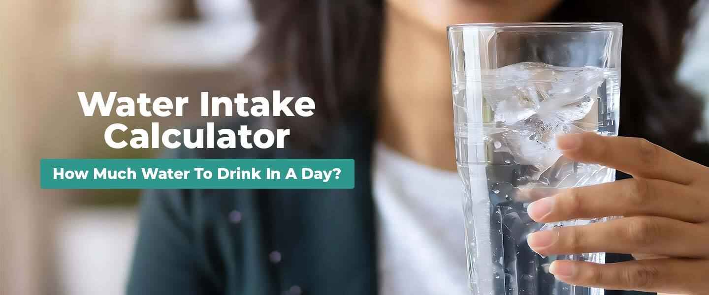

Water is one of the most essential resources on the planet. In a world increasingly affected by climate change, water scarcity has become a significant issue impacting health, agriculture, and the environment. This page dives into the importance of water conservation, strategies for sustainable usage, and the benefits of preserving our water resources.
Conserving water means using it wisely and efficiently, and it’s the most effective way to save money and ensure availability for future generations...
Domestic water About 8% of the world's water is used for domestic purposes, such as drinking, cooking, bathing, cleaning, and laundry. Water consumption The average person uses about 680 liters of water per day, including water for commercial and industrial use. However, water consumption varies by community, season, day, and hour. Drinking water The recommended daily amount of drinking water depends on a person's age, health, activity, and environment. For example, the Institute of Medicine recommends that men drink 13 cups (about 3 liters) of fluids per day, and women drink 9 cups (a little over 2 liters) per day. Water scarcity Some cities experience water scarcity due to factors like family size, housing quality, and reliability. Water consumption for protein production The amount of water required to produce different proteins varies. For example, beef production requires over 4,800% more water than producing whole algae protein. Water content The moisture content of wood can be measured using an electronic moisture meter.


Why do we need to Conserve Water? Conserving water helps us by supplying more amount of water for longer usage. It has become necessary in all areas because these natural resources are reducing along with the increasing population and their usages. There are several ways to conserve water. Here are some important and easy ways for the conservation of water Keeping the tap closed when not in use. Check for the openings or leaks in water distribution pipes. Make sure to use collected rainwater for gardening or washing purpose. Always have a measure of how many buckets of water is wasted in a day and try to reduce. Do not run more water than necessary while washing and cleaning clothes, utensils, etc. Do not prolong your bathing. Go for a quick shower rather than wasting buckets of water Rainwater harvesting is one of the best method used for conserving water. There are different methods used to preserve rainwater instead of getting it wasted. Also, read about Rainwater Harvesting Farmers can also contribute to this system of conservation of water by using Drip irrigation system in their fields. This is a type of irrigation system which can be practised by all framers to save water. In this system, water is directly supplied to the plant roots and prevents water from being wasted by evaporation. These were a few information on how can we Conserve Water, and some preventive measures are taken to Conserve Water.
Conserving water means using it wisely and efficiently, ensuring a steady supply for future generations. Simple practices like repairing leaks, installing water-efficient fixtures, and being mindful of daily water usage can make a large difference. Globally, water conservation efforts have led to better health outcomes, improved agriculture, and sustainable economic growth.
By reducing water waste and protecting water quality, individuals and communities can contribute to a more sustainable world. From agricultural practices to household consumption, every drop counts. It’s essential that we understand our impact on water resources and take proactive measures to reduce consumption and promote water sustainability.